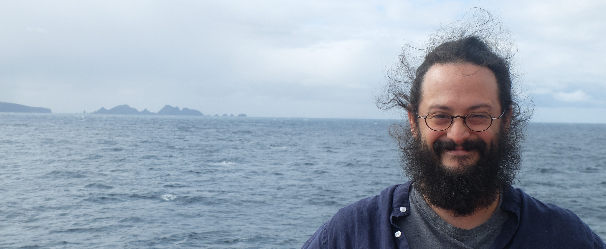

I'm a micropaleontologist at the Museum für Naturkunde in Berlin, Germany.
I study Cenozoic siliceous plankton and their relationship with past climatic and oceanographic changes.
My taxonomical expertise is in Cenozoic radiolarians.
My long-term project aims at quantifying the link between plankton macroevolution and the Cenozoic geochemical evolution of the ocean, with an emphasis on the cycles of carbon and silicon. In particular, by estimating the amount of siliceous microfossils (and in particular the amount of diatoms) that deposited since the middle Eocene in the world's sediments, I'm trying to constrain the Cenozoic fluctuations in the volume of the marine silicon cycle, and to test quantitatively the hypothesis according to which the expansion of diatoms impacted the global carbon cycle on a geological timescale.
I am also the current maintainer of the Neptune database.
I study Cenozoic siliceous plankton and their relationship with past climatic and oceanographic changes.
My taxonomical expertise is in Cenozoic radiolarians.
My long-term project aims at quantifying the link between plankton macroevolution and the Cenozoic geochemical evolution of the ocean, with an emphasis on the cycles of carbon and silicon. In particular, by estimating the amount of siliceous microfossils (and in particular the amount of diatoms) that deposited since the middle Eocene in the world's sediments, I'm trying to constrain the Cenozoic fluctuations in the volume of the marine silicon cycle, and to test quantitatively the hypothesis according to which the expansion of diatoms impacted the global carbon cycle on a geological timescale.
I am also the current maintainer of the Neptune database.